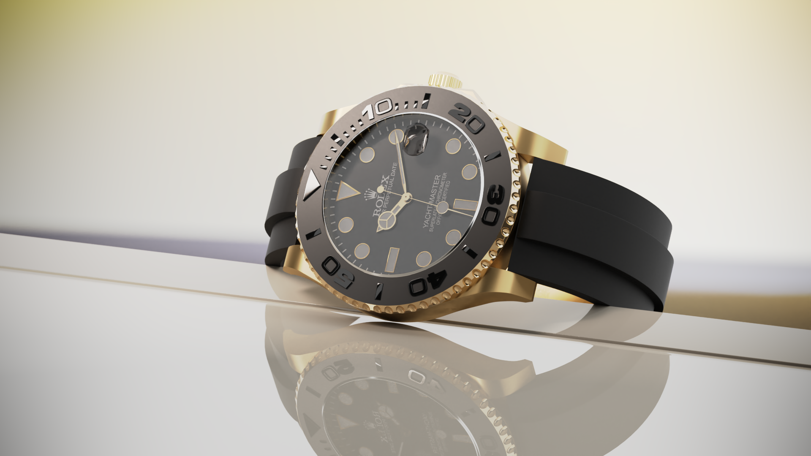
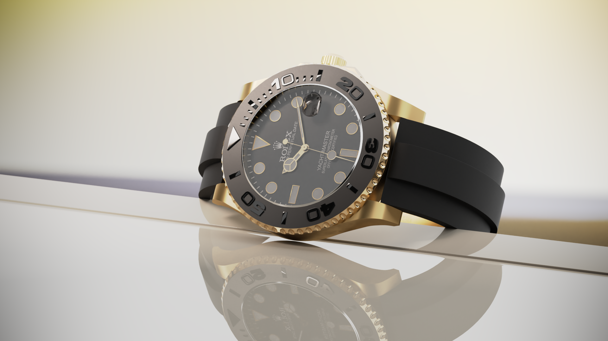

Fotografija, 3D animacija, 3D vizualizacija


Zovem se Vito Špicar i kreativni sam vizualni umjetnik specijaliziran za fotografiju, video produkciju, 3D animaciju i 3D vizualizaciju. Moja strast prema digitalnom stvaranju počela je još u mladosti, a tijekom godina sam razvijao svoje vještine kroz razne projekte, natjecanja i profesionalne angažmane.
Svojim radom nastojim kombinirati tehničku preciznost i kreativni izražaj, stvarajući vizuale koji pričaju priču i prenose emocije. Bilo da je riječ o fotografiji, video produkciji, animaciji ili 3D modeliranju, svaki projekt doživljavam kao priliku za istraživanje novih ideja i inovativnih rješenja.
U svom portfoliju posebno ističem projekte koji spajaju umjetnost i tehnologiju, gdje detalji, kompozicija i estetika igraju ključnu ulogu. Moj cilj je stalno rasti, učiti i inspirirati druge kroz vizualni sadržaj koji kreiram.


 
